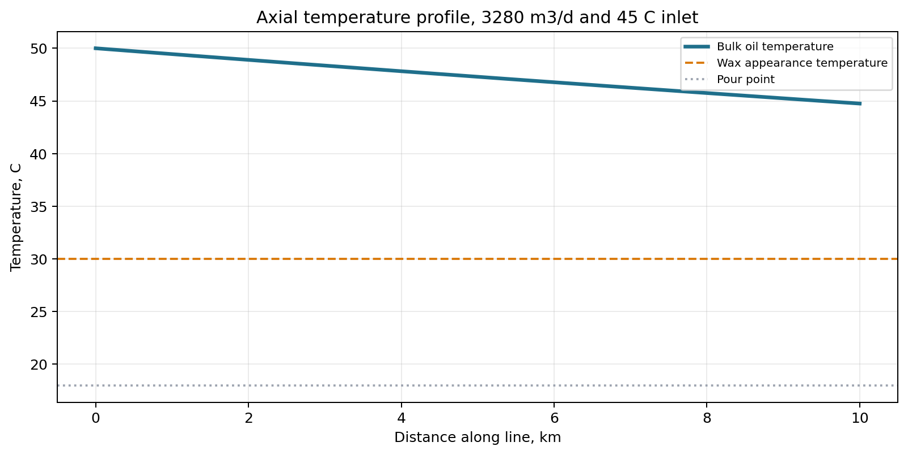
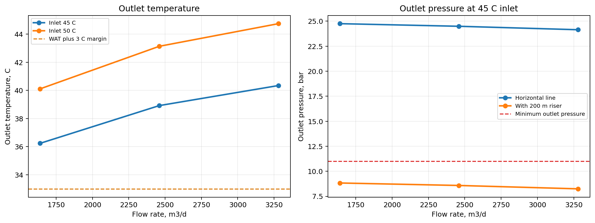
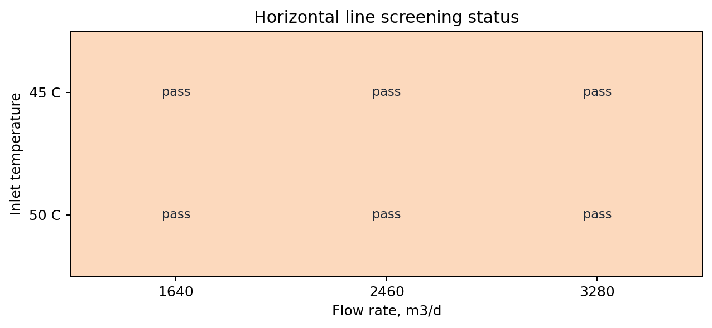

Wax appearance
30.0 C
Overall U
0.834
W/m2/K
Minimum outlet
11 bar
Riser static head
16 bar
At 818 kg/m3 and 200 m



Horizontal line
| Flow, m3/d | Inlet, C | Outlet, C | Outlet, bar | Wax solid | Viscosity, cP | Status |
|---|---|---|---|---|---|---|
| 1640 | 45 | 36.2 | 24.8 | 0.0000 | 1.43 | pass |
| 2460 | 45 | 38.9 | 24.5 | 0.0000 | 1.40 | pass |
| 3280 | 45 | 40.3 | 24.1 | 0.0000 | 1.38 | pass |
| 1640 | 50 | 40.1 | 24.8 | 0.0000 | 1.32 | pass |
| 2460 | 50 | 43.1 | 24.5 | 0.0000 | 1.29 | pass |
| 3280 | 50 | 44.8 | 24.2 | 0.0000 | 1.27 | pass |
Line with 200 m riser
| Flow, m3/d | Inlet, C | Outlet, C | Outlet, bar | Wax solid | Viscosity, cP | Status |
|---|---|---|---|---|---|---|
| 1640 | 45 | 36.2 | 8.8 | 0.0000 | 1.43 | check |
| 2460 | 45 | 38.9 | 8.6 | 0.0000 | 1.40 | check |
| 3280 | 45 | 40.3 | 8.2 | 0.0000 | 1.38 | check |
| 1640 | 50 | 40.1 | 8.9 | 0.0000 | 1.32 | check |
| 2460 | 50 | 43.1 | 8.6 | 0.0000 | 1.29 | check |
| 3280 | 50 | 44.8 | 8.3 | 0.0000 | 1.27 | check |
A 200 m riser at 818 kg/m3 needs about 16 bar of static head. A 25 bar inlet cannot leave 11 bar at the outlet after friction. The horizontal case isolates thermal and wax margin. The riser case shows the data gap.
The model uses published fluid properties and field geometry. Deposit growth, internal film resistance, and field pressure validation are outside this demo.